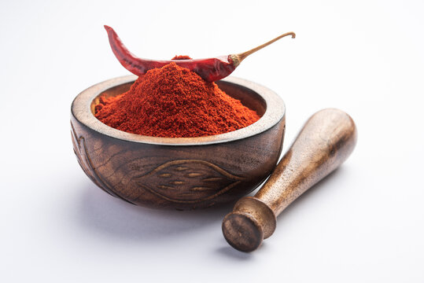
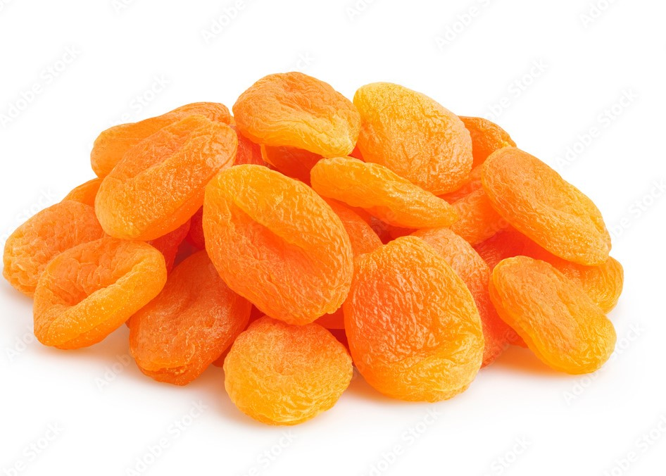
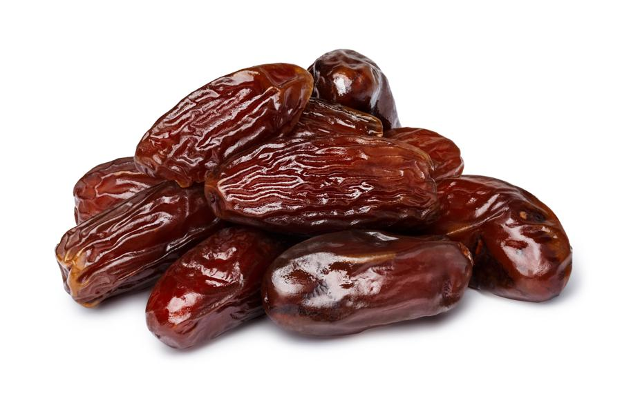
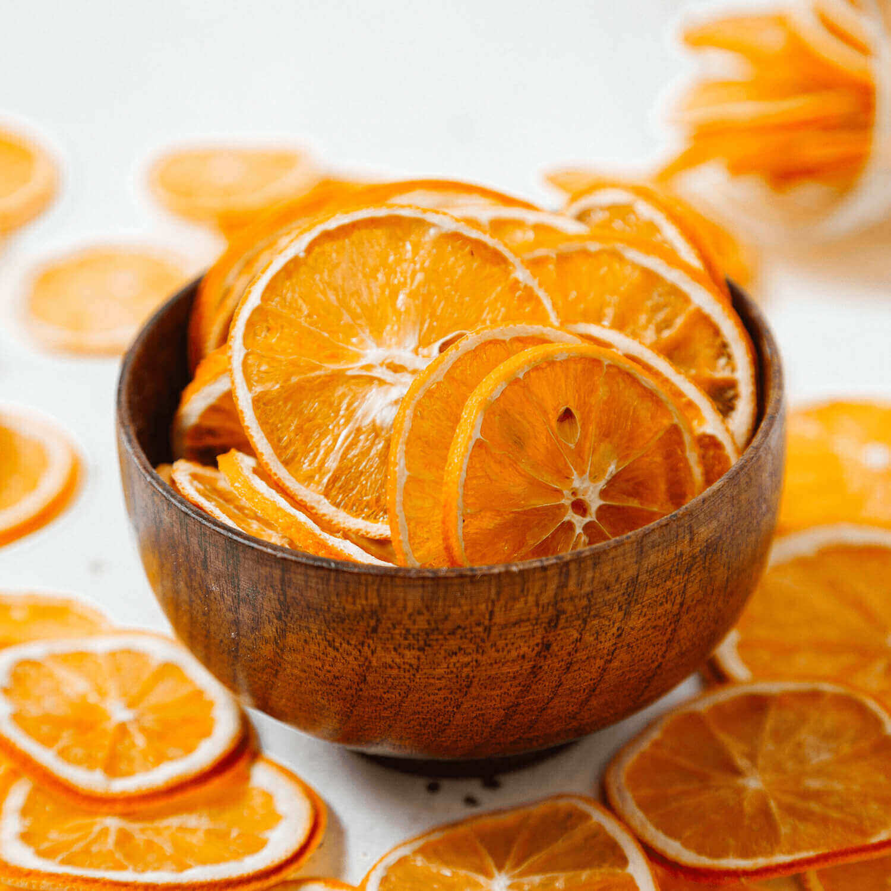
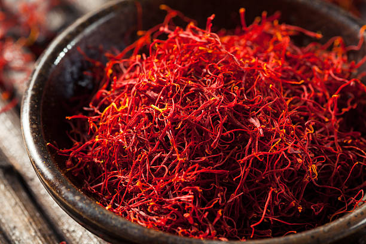
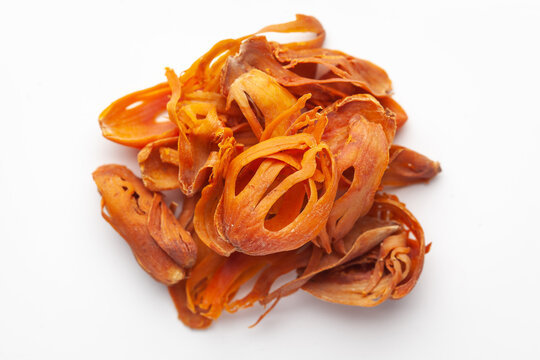

STOCK
| ITEM NAME | IMAGE | DESCRIPTION | QUANTITY SOLD | QUANTITY AVAILABLE |
|---|---|---|---|---|
CASHEWS |
 |
Reduced cholesterol Cashews have a bad reputation for containing saturated fat. Heart disease prevention Not only can they lower bad cholesterol, cashews may help prevent heart disease due to their high magnesium content |
200KGS | 1 TON |
RAISINS |
 |
Rich in Nutrients. Helps Maintain Healthy Blood Sugar Levels. Aid in Weight Management. Support Heart Health. |
100KGS | 600KGS |
CHILLI POWDER |
 | It is common knowledge that red chilli powder aids in weight loss. One teaspoon of red chilli powder has 9% of your RDA (requisite daily amount) of vitamin A in it Red chillies are high in potassium, and so is their powder. It also reduces harmful bacteria in your gut, keeping intestines healthy. |
200KGS | 750.52KGS |
ELACHI |
 |
Improve digestive health Used to treat nausea and vomiting. Control blood sugar level . Help in nicotine withdrawal. | 270KGS | 800KGS |
NUTMEG |
 |
It is essential to consume nutmeg in moderation as an excess of it can lead to delirium It can be found in whole-seed form but is most often sold as a ground spice. It has a warm, slightly nutty flavor and is often used in desserts and curries. Antioxidants neutralize free radicals, preventing cellular damage and keeping your free radical levels in check. |
100KGS | 200KGS | DRIED PLUMS |
 |
Prunes and Prune Juice May Relieve Constipation Plums and Prunes Are Rich in Antioxidants They May Help Lower Your Blood Sugar Prunes May Promote Bone Health |
100KGS | 200KGS | ANGEER |
 |
Figs Control blood pressure and aging Figs Help in weight management: Figs Reduces chances of cancer: Anjeer keeps the reproductive system in checK |
100KGS | 200KGS | DRIED STRAWBERRIES |
 |
Healthy Alternative to Candy. Tasty Source of Minerals. Lower Bad Cholesterol. |
100KGS | 200KGS | DRIED APRICOT |
 | May protect your liver May boost skin health High in antioxidants Very nutritious and low in calories |
100KGS | 200KGS |
DRIED KIWI |
 |
Preventing Hair Loss kiwis contain high levels of serotonin and antioxidants. Consuming fewer calories is the biblical phrase for losing weight Antioxidants, like vitamins C and E, are beneficial for preventing hair loss. |
100KGS | 200KGS |
DRIED AMLA |
 |
Amla is considered very beneficial for hair and skin. Helps Fight Against the Common Cold Amla & its Positive Effects on Cancer Excellent Anti-inflammatory Properties |
100KGS | 200KGS |
DRIED CHERRY |
 |
Dried Cherries Include Antioxidants Dried Cherries Encourage Healthy Cardiovascular Function Promote Healthy Joint Function The melatonin found in cherries encourages healthy sleep patterns |
100KGS | 200KGS | DRIED BLUEBERRIES |
 |
Blueberries are low in calories but high in nutrients Blueberries are one of the top antioxidant foods Blueberries reduce DNA damage, which may help protect against aging and cancer. Blueberries protect cholesterol in your blood from becoming damaged |
100KGS | 200KGS | SALTED CASHEWS |
 |
Salted Cashews are rich in protein, with approximately 5 grams per serving. Cashews have had a bad reputation for containing saturated fat. Salted cashews can be part of a heart-healthy diet in moderation. Salted cashews can have about 1.8 mg of iron, about 10 per cent of your daily recommended value. |
200KGS | 8KGS | DRIED CRANBERRIES |
 |
Eradicates Dandruff Woes Combats Urinary Tract Infection (UTI) Consuming a few dried cranberries will provide ample vitamin C for the daily diet. Dried cranberry is bestowed with the key mineral for optimal muscle function – magnesium |
200KGS | 8KGS | PISTACHIOS |
 |
Low in calories yet high in protein May promote blood vessel health Promote healthy gut bacteria May lower cholesterol and blood pressure |
200KGS | 8KGS | DRIED BLACKBERRIES |
 |
For such a tiny berry, blackberries are high in fiber. It also helps your body metabolize carbs, amino acids, and cholesterol. reduce free radicals (molecules released by toxins) in the body The review concluded that antioxidants in berry fruits help fight free radicals and alter how brain neurons communicate |
200KGS | 8KGS | DATES |
 | Dates are highly rich in soluble fiber, which promotes regular bowel movements and healthy digestion. The antioxidants in dates protect neural cells from oxidative damage. Fructose in dates does not require insulin to be metabolised. |
200KGS | 8KGS | DRIED ORANGES |
 | You can use dried oranges for a proper lean diet Decoction of dried orange leaves is useful for washing swelling and relieving pain. Oranges and thin sheets between oranges are best medicine for lowering blood. It is a blood thinner and therefore the best way to eliminate facial pimples. |
200KGS | 8KGS | DRIED MANGO |
 |
Support digestion and gut health Immune and enrgy booster Lower bad cholestrol and blood pressure Dried fruits are still a rich source of important vitamins, minerals and fibre,so they can still be consumed in moderation. |
200KGS | 8KGS | TURMERIC POWDER |
 |
Inflammation Degenerative eye conditions Hyperlipidemia (cholesterol in the blood) Muscle soreness after exercise |
200KGS | 8KGS | BLACK PEPPER |
 |
High in antioxidants Has anti-inflammatory properties May benefit your brain May improve blood sugar control |
200KGS | 8KGS | MUSTARD SEEDS |
 |
It may reduce inflammation. It may act against cancer. Selenium is a mineral that enhances bone density and tooth enamel strength. Mustard seeds provide anti-ageing effects through vitamins A, C, and K. |
200KGS | 8KGS | CLOVES |  |
Clove oil is perhaps best known as a remedy for toothache and dental pain. Cloves are best for people with high blood sugar levels. Cloves are best used for easing flatulence, gastric irritability, dyspepsia, and nausea. People with weak bones and osteoporosis are benefitted from taking cloves regularly. |
200KGS | 8KGS | CINNAMON |
 |
Contains powerful medicinal properties May have anti-inflammatory properties Could protect against heart disease May have beneficial effects on neurodegenerative diseases |
200KGS | 8KGS | CORIANDER |
 |
Rich in immune-boosting antioxidants May have anti-inflammatory properties C May promote digestion and gut health Its antioxidants have been shown to fight inflammation in your body |
200KGS | 8KGS | CUMIN SEEDS |
 |
Is a Rich Source of Iron Contains Beneficial Plant Compounds May Help With Diabetes May Promote Weight Loss and Fat Reduction |
200KGS | 8KGS | SAFFRON |
 | May improve mood and treat depressive symptomss May have cancer-fighting properties May reduce appetite and aid weight losss Saffron is generally safe with little to no side effects. |
200KGS | 8KGS | BAY LEAF |
 |
Compounds found in bay leaves have been shown to help regulate blood sugar levels. Bay leaves contain phytonutrients and antioxidants with anti-inflammatory properties. Reduces Inflammation and Enhances Wound Healing Increases body metabolism and helps promote weight loss. |
200KGS | 8KGS | YELLOW MUSTARD |
 |
Yellow mustard seeds are a very good source of fibre, protein, calcium, iron The selenium and omega-3 fatty acids in these seeds are very good for your health Mustard seeds protect against Gastrointestinal Cancer Mustard seeds are very helpful for people who get migraines often. |
200KGS | 8KGS | MACE |
 | It is essential to consume nutmeg in moderation as an excess of it can lead to delirium It can be found in whole-seed form but is most often sold as a ground spice. It has a warm, slightly nutty flavor and is often used in desserts and curries. Antioxidants neutralize free radicals, preventing cellular damage and keeping your free radical levels in check. |
200KGS | 8KGS | STAR ANICE |
 |
It may be an anti-microbial. It may act as an analgesic (relieves pain) It may act like a sedative (induces sleep) It may act as an anti-diarrhoeal. |
200KGS | 8KGS | ALMOND CHOCOLATE |
 |
Almonds and chocolate have health benefits such as lowering blood sugar, blood pressure, cholesterol and lowering hunger Almonds can lend a healthy halo to chocolate products The combination of these factors equates to a lower risk for heart disease. Almond butter is a top filling/flavor included in surveyed consumers ideal chocolate products. |
200KGS | 8KGS | HAZEL NUT CHOCOLATE |
 |
Linked With Lower Rates of Cancer May Help Lower Blood Sugar Levels Although they are high in calories, they are loaded with nutrients and healthy fats. However, hazelnuts contain phytic acid,like iron and zinc, from the nuts |
200KGS | 8KGS | COCONUT CHOCOLATE |
Eating coconuts are excellent for ones immunity. They are antiviral, antifungal, antibacterial, and anti-parasitic it can help treat some of mankind’s worst of illnesses such as influenza, throat infections, urinary tract infections Its antioxidant properties slow down the aging process by protecting the body from harmful free radicals |
200KGS | 8KGS | DATES CHOCOLATE |
 |
Dates are easy to digest, Stimulate the urine, clean the kidneys and are useful to the liver
TDates are good appetizers. it can help treat some of mankind’s worst of illnesses such as influenza, throat infections, urinary tract infections Dates contain phosphor there for it increases male fertility and enhances sexual strength |
200KGS | 8KGS |